Práctica 3.1: Instalación de Tomcat
Jaime Grueso Martin
Indice
- Instalación de Tomcat
- Despliegue Manual Mediante la GUI de Administración
- Despliegue con Maven
- Cuestiones
Instalación de Tomcat
Para la instalacion de Tomcat se ha elegido la versión 10 de Tomcat. Para empezar, se debe descarjar el JDK. Para ello, se ejecutará el siguiente comando:
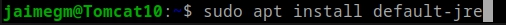
Una vez haya finalizado la instalación, se procederá a comprobar la versión instalada con el siguiente comando:
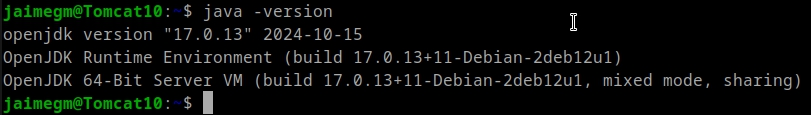
A continuación, se procederá a la instalación de Tomcat. Para ello, se ejecutará el siguiente comando:
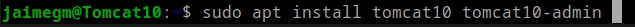
Se procederá a la creación de un usuario para Tomcat. Para ello, se deberá modificar el archivo tomcat-users.xml. Deberá quedar de la siguiente manera:

Una vez configurado el archivo, se procederá a reiniar el servicio de Tomcat con el comando sudo systemctl restart tomcat. Para comprobar que el servicio se ha iniciado correctamente, se ejecutará el comando sudo systemctl status tomcat y debera aparecer algo similar a lo siguiente:
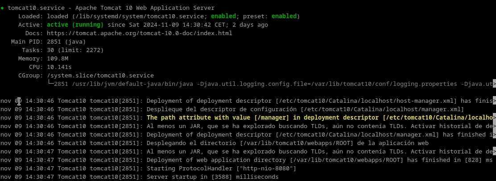
Despliegue Manual Mediante la GUI de Administración
Se accederará a la dirección http://localhost:8080/nombre_usuario/html y deberá aparecer la siguiente pantalla:
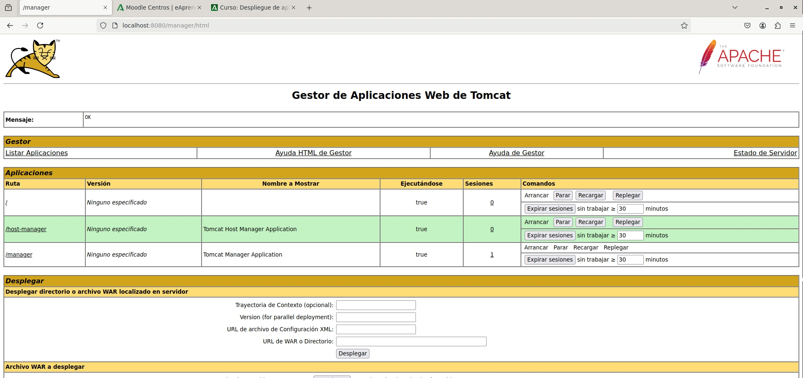
Una vez se haya comprobado que Tomcat se ha instalado correctamente, se procederá a intentar desplegar un un archivo .war en Tomcat.
El archivo .war que se nos ha facilitado tiene errores, por lo que se procederá a crear un archivo .war con un proyecto de ejemplo.
Desde el siguiente enlace se descargará un proyecto de ejemplo: https://tomcat.apache.org/tomcat-6.0-doc/appdev/sample/
Se buscará el archivo y se seleccionará para desplegar en Tomcat. Una vez hecho esto, se ve que se ha desplegado correctamente:
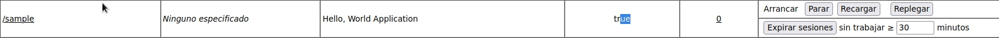
Y si se accede al archivo, se podrá ver la siguiente pantalla:
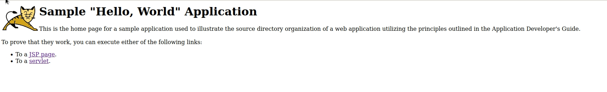
Despliegue con Maven
Instalación de Maven
Para el despliegue con Maven, primeramente se deberá instalar Maven.
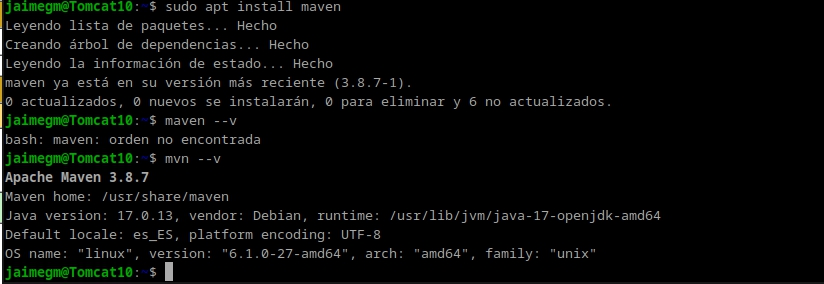
Configuración de Maven
Ahora se procederá a añadir un nuevo usuario a al archivo tomcat-users.xml para poder desplegar con Maven. Deberá quedar de la siguiente manera:
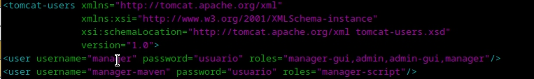
Hecho esto, se procederá a configurar Maven. Para ello, se deberá modificar el archivo settings.xml. Deberá quedar de la siguiente manera:
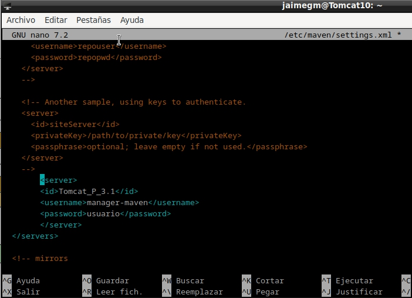
Ahora se clona el repositorio de ejemplo que se nos ha facilitado y se procederá a desplegarlo con Maven.
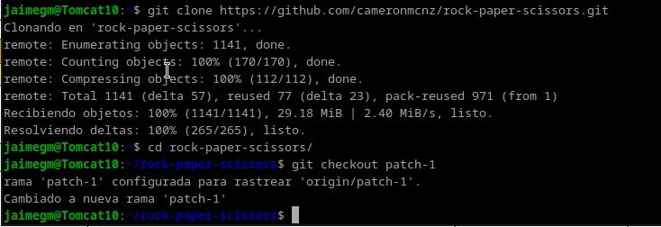
Y se editará el archivo pom.xml para añadir la configuración. Deberá quedar de la siguiente manera:
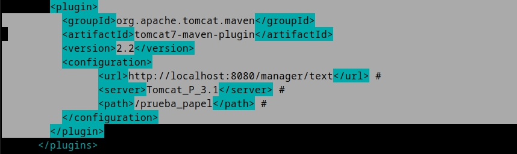
Despliegue
Si todo ha ido bien, si se ejecuta el comando mvn tomcat7:deploy deberá aparecer algo similar a lo siguiente:
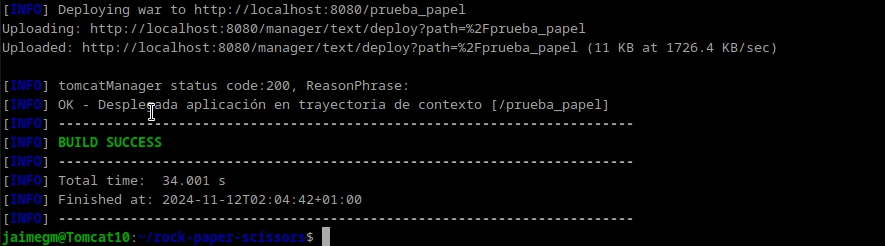
Y si se accede a la dirección http://localhost:8080/nombre_usuario/ deberá aparecer el directorio del proyecto:
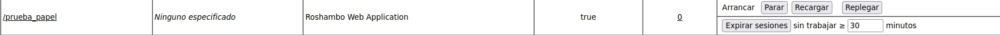
Si se accede al archivo, deberá aparecer la siguiente pantalla:

Cuestiones
Habéis visto que los archivos de configuración que hemos tocado contienen contraseñas en texto plano, por lo que cualquiera con acceso a ellos obtendría las credenciales de nuestras herramientas. En principio esto representa un gran riesgo de seguridad, ¿sabrías razonar o averigüar por qué esto está diseñado de esta forma?
Se debe a la simplicidad de configuración y la suposición de que Tomcat se usará en entornos controlados y seguros. En producción, se recomienda evitar esta práctica usando autenticación externa.